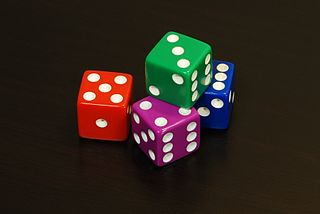
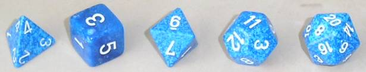
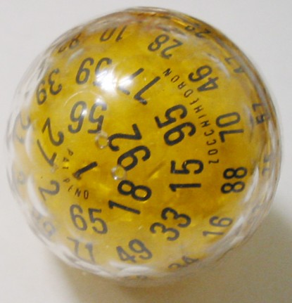
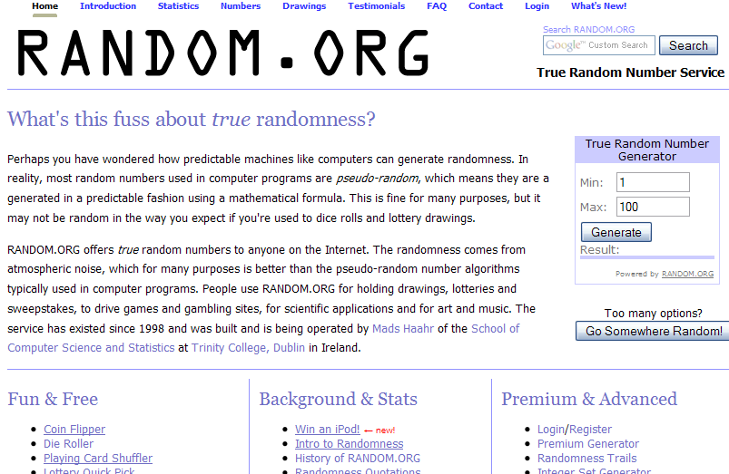

- tiempo
- espacio
- ¿correctitud?
Hay problemas interesantes que se caracterizan por tener algoritmos eficientes que dependen de una fuente interna de aleatoriedad, y que se equivocan con una probabilidad arbitrariamente baja.
Un algoritmo aleatorio tiene acceso a una fuente de bits aleatorios. Luego este algoritmo puede usar esos bits para guiar su computo.
00101110010011100001011101111101....
Tenemos una idea intuitiva de lo que hace que una secuencia de bits es aleatoria.
Recién al fin del siglo 20 se definió matemáticamente que significaba "ser aleatoria".
Ver: Church, Martin-Löf, Kolmogorov, Chaitin.
En esta clase no necesitamos conocer esas definiciones. Suponemos que esas secuencias se pueden generar.



Zocchihedron
Hardware que usa ruido del ambiente (temperatura, radiaciones, etc.) para generar bits aleatorios.
https://www.kickstarter.com/projects/moonbaseotago/onerng-an-open-source-entropy-generator

Son algoritmos que generan secuencias que parecen aleatorias.
Sacrificar un poco de correctitud para ahorrar mucho tiempo.
Un algoritmo rapido con probabilidad de error muy baja puede ser más deseable que un algoritmo lento totalmente exacto.
En el mundo real, los cálculos tienen una probabilidad de no terminar, por más que en teoría sean determinísticos y terminan:
Una MTP es una MT con dos funciones de transición δ0 y δ1. Para ejecutar una MTP M con un input x, se elige en casa paso con probabilidad 1/2 entre aplicar δ0 y δ1.
La máquina sale 1 (aceptar) o 0 (rechazar). Denotamos M(x) la variable aleatoria correspondiente al valor que M escribe al final de su cálculo. Dada una función T : ℕ ↦ ℕ, decimos que M corre en tiempo T(n) si para todo input x, M se detiene con input x en T(|x|) pasos independientemente de sus elecciones aleatorias.
Pr[M(x) = 1] es la fracción de ramas de computación de M que se terminan con output 1.
La diferencia con MTND es la interpretación del grafo de las computaciones posibles. Una MTND acepta x si existe 1 rama exitosa.
Una MTP representa una computación realista.
Tenemos dos polinomios de grado d, descritos de manera compacta, queremos chequear si son iguales o no:
(1 − x)5(5x4 + 7x)3 − (x − 5)64 = (x − 4)8(x2 + 5x)425?
Desarrollar los términos demora un tiempo exponencial en función del tamaño inicial de los polinomios.
Pero eligir un x aleatorio, y metiéndolo en los polinomios para comparar sus valores en x es mucho más rápido.
Si los dos polinomios son distintos, en cuantas valores pueden estar iguales? En d valores, según el teorema fundamental del algébra. Y hay poca chance que un real aleatorio les haga coincidir.
Sea una máquina M1 probabilista corriendo en tiempo T(n). Puede dar una respuesta equivocada con probabilidad 0 < e < 1/2.
¿Como reducir esa probabilidad de error?
Sea 0 < e < 1/2 una constante, p(n) un polinomio p(n), y M1 una máquina probabilista corriendo en tiempo polinomial con probabilidad de error e.
Entonces existe una máquina probabilista M2 corriendo en tiempo polinomial equivalente, que tiene probabilidad de error de 2 − p(n).Idea: M2 corre M1 una cantidad polinomial de veces y toma la mayoría de las salidas de M1.
Dada una entrada x, M2 hace lo siguiente:
Midamos la proba que M2 se equivoque.
Sea S la secuencia de resultados de las corridas de M1. Sea pS la proba que M2 obtenga S. Tenemos 2k = c + w con c la cantidad de resultados correctos y w la cantidad de resultados equivocados de M1.
M2 se equivoca si c ≤ w. Sea ex la proba que M1 erre con entrada x. Si S es una secuencia "mala", entonces:
Hay 22k secuencias posibles, entonces 22k secuencias malas posibles como máximo. Entonces:
Pr[M2 se equivoca con entrada x]
= ΣS mala pS
≤ 22kek(1 − e)k
= (4e(1 − e))k
Como e < 1/2 entonces 4e(1 − e) < 1, y la probabilidad decrece exponencialmente en función de k.
Si buscamos a bajar la proba de error de M2 a 2 − t elijimos k ≥ t/α con α = log2(4e(1 − e)).
Conclusión: podemos bajar arbitrariamente la probabilidad de error, manteniendo un tiempo de corrida polinomial.
Ahora vemos más precisamente las clases de complejidad con aleatoriedad y los resultados correspondientes.
Ver slides de Nabil Mustafa: RP, coRP, BPP, ZPP.
En lugar de suponer que las máquinas tienen dos funciones de transición y una fuente interna de bits aleatorios, podemos decir que son deterministas y toman con su entrada una secuencia de bits aleatorios.
Ejemplo: L ∈ RP si existe una máquina determinista M corriendo en tiempo polinomial y un polinomio p(n) tal que:
Demostrar que BPP ⊆ PSPACE.
Fue definida junta a las otras por John Gill en el 1977.
Otro nombre propuesto para PP: Majority-P.
L ∈ PP si existe una MT probabilista tal que para toda entrada x:
¿Diferencia con BPP?
BPP: la probabilidad de contestar correctamente es una constante que no depende del input (oficialmente 2/3 pero puede ser cualquiera > 1/2).
PP: la probabilidad puede depender del tamaño del input: 1/2 + 2 − n
Consecuencia: amplificación no funciona con PP (requiere cantidad exponencial de repeticiones)
Tenemos BPP ⊆ PP.
Problema en PP: MAJSAT = formulas satisfechas por la mayoría de las asignaciones de sus variables.
Factorización: la operación de encontrar la decomposición en factores primos de un entero dado. Si ordenamos esos factores, esa decomposición es única.
Convertir ese problema en problema de decisión: hacer una pregunta si/no acerca de la decomposición en factores primos (ej: ¿tiene un factor que termina en 7?): FACTOR
¿Tiene forma de estar en NP?
Diferencia entre FACTOR y SAT:
El certificado de FACTOR es de tamaño polinomial y se puede chequear que realmente es la decomposición de la entrada haciendo multiplicaciones (en tiempo polinomial).
Sugiere que FACTOR tiene una estructura particular que podemos explotar. Sugiere también que no es NP-completo.
Consecuencias:
FACTOR esta en NP ∩ coNP.
PRIMES = { < N > ∣ N es primo }
Queremos un algoritmo que corra en tiempo polinomial en el tamaño de la representación de N, ie, tiempo poly(log N).
PRIMES = { < N > ∣ N es primo }
Dado un entero N y A ∈ [1;N-1], definamos QRN(A) como:
Usamos los resultados siguientes:
Entonces tenemos el algoritmo P para PRIMES. Dado N impar:
Si N ∈ PRIMES, el algoritmo siempre acepta.
Si N ∉ PRIMES, rechaza con probabilidad ≤ 1/2.
Otra fuente : Descripción del algoritmo de Miller y Rabin desde "As I mentioned", Scott Aaronson
Hubo varios casos particulares de problemas que se de-aleatorizaron:
Ver derandomization
Todavía ZEROP resiste.
Hay una sospecha que P = BPP, es decir que se puede en general de-aleatorizar cualquier problema.
exists a fundamen tal question as to w h e t her ev ery probabilistic algorithm can b e r e p lac ed b y a deterministic one, or der andomize d . In terms of complexit y , the question is whether P =BPP , whic h i s almost as deep a question as P=NP . There is curren tly a v ery strong b elief that derandomization is p oss ib le in general, b ut no one y et kno ws ho w to pro v e it.